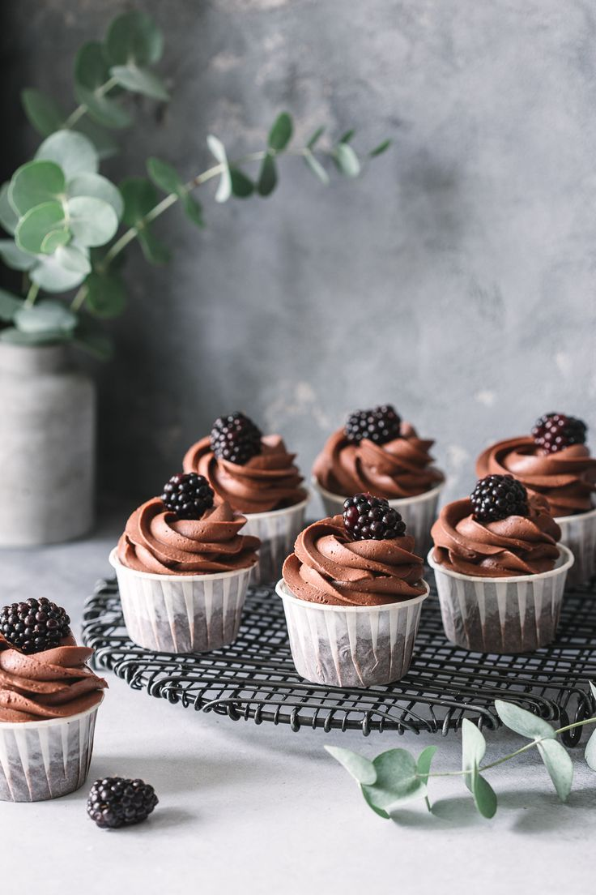

|  |
|
Кто-то называет их маленькими кексами, кто-то считает их маффинами, и все они правы и непарвы одновременно. Что такое “капкейк” и с чем его едят? И с чего же началась история этого миниатюрного тортика? Капкейк – торт для одного. «Кап» в переводе с английского cup означает «чашка», «кейк» (cake) – торт. Не стоит путать их с маффинами: маффины не украшают, они не такие пористые и не такие «пышные», как капкейки. Кроме того, маффины могут быть приготовлены с мясной или другой несладкой начинкой в отличие от капкейков, которые всегда будут сладким дессертом, делающим любой стол праздничным. Капкейк в том виде, который нам знаком сегодня, был придуман в 1796 автором книги «Американская кулинария» Амелией Симмонс. В ней Амелия поделилась рецептом необычного торта. Его необычность заключалась в том, что его нужно было выпекать... в чашке! Кстати, ее книга была первой напечатанной американской книгой о кулинарии. Это был рецепт современного капкейка. Но история его куда более интересна, чем кажется на первый взгляд. Дело в том, что родом этот небольшой тортик не из Америки, а из Великобритании – их запекали тесто маленькими порциями, клали в него разнообразную начинку от сладкой помадки до обжаренного лука. Такие капкейки были очень популярны среди крестьян – они брали их в поле для сытного перекуса. Несколько позже некоторые британцы, как впрочем и жители других стран, переехали в Америку, забрав с собой не только вещи и воспоминания, но также и традиции своего народа, включая самые удачные кулинарные изыски, среди которых был наш любимый капкейк. Существует шуточное мнение, что капкейки придумали дантисты и диетологи. Очевидно, с пользой для своих клиентов – с таким тортиком вы не навредите ни своим зубам, ни своей фигуре. Украшенные вкуснейшим кремом или глазурью, они всегда ставят нас перед выбором – съесть один или сразу три!.. |